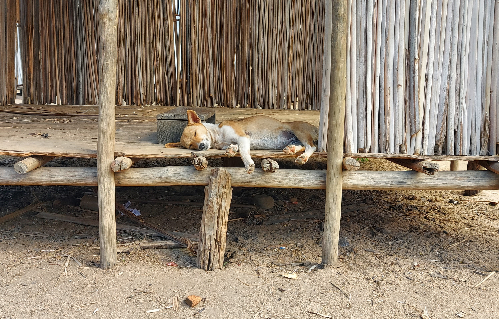
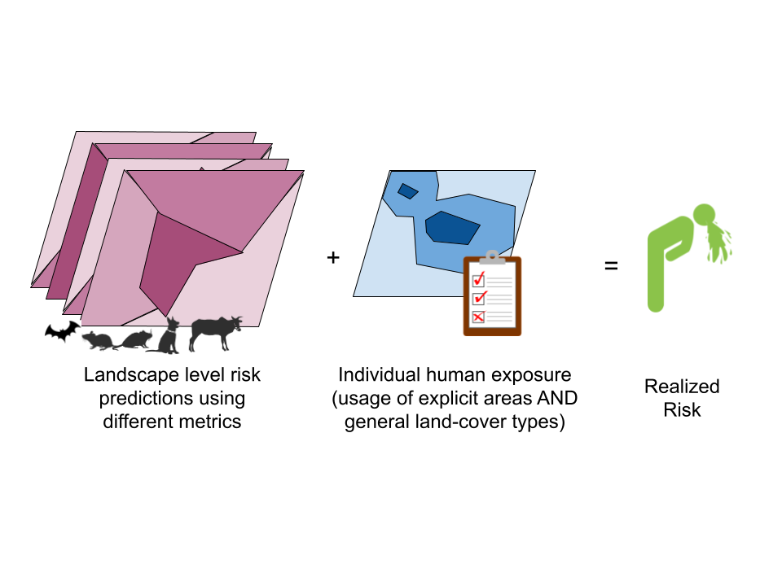
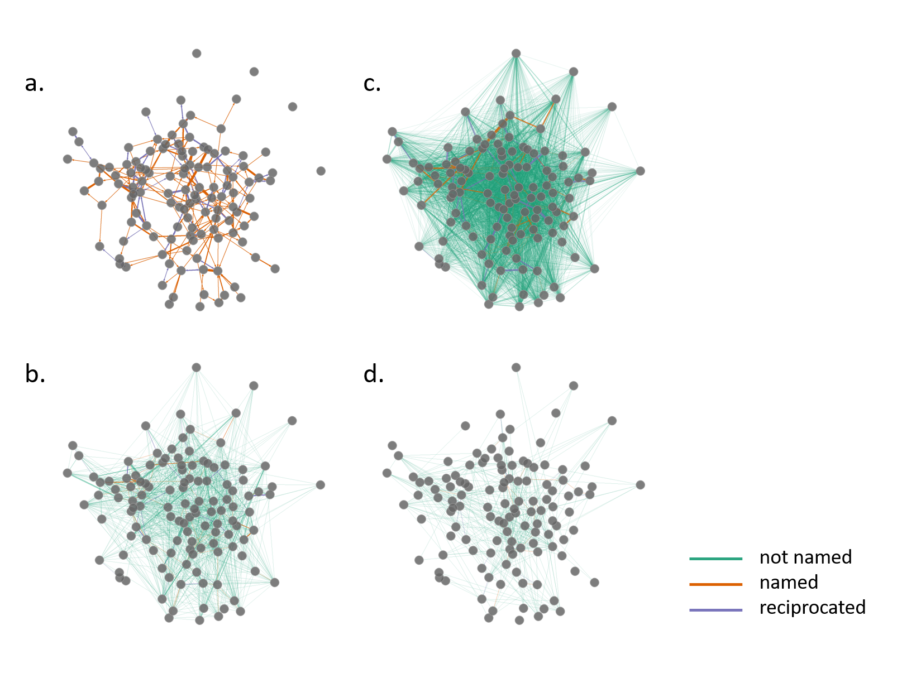

Research
Current Projects
Manipulating multi-species Leptospira prevalence

Leptospirosis is a globally distributed disease, which disproportionately affects impoverished communities such as subsistence farmers. Humans are most commonly exposed to the Leptospira bacterium through contact with the urine of an infected animal, such as a dog or rat, either directly, or indirectly through contaminated water. During Leptospira outbreaks, a commonly recommended public health measure to prevent human infections is to vaccinate dogs, however, the efficacy of this measure has never been tested.
Does vaccinating dogs against Leptospira lower infection prevalence in humans and rats? To answer this question, we vaccinated >75% of dogs living in a rural village in Madagascar against Leptospira, then monitored dogs, humans, and small mammals living in that village over the next year. I am also approaching this question from a theoretical standpoint using SIR and agent-based models to understand the mechanism by which the vaccination campaign impacted community- and individual-level prevalence of Leptospira infections.
See my ESA 2023 poster presentation on our initial finding here
Realization of zoonotic “landscape of risk” metrics into human infections

How closely do “landscape of risk” metrics of human and domestic animal exposures map to realized risk (infections) in humans and other incidental hosts across a suite of parasites? How important are landscape level risk metrics versus environmental risk metrics in predicting realized risk in humans? Is quantifying the landscape of risk a useful metric for assessing spillover risk?
To answer these questions I am working across a suite of samples from small mammals, bats, domestic animals, and people living and working along a habitat degradation gradient in rural northeastern Madagascar. Habitat degradation alters the ecological communities and the pathogen pressure exerted by the transformed landscape, thus altering patterns multi-host parasite sharing. I use infection data and environmental trait to build models of “landscape-level” risk of these various habitat types, then overlay high-resolution GPS tracker data from people to quantify their exposure risk. Then use infection data from the same people to test if that risk translates into a higher probability of infection.
Building networks of people, animals, and infections in northeastern Madagascar

As part of the team effort to understand the ecological, social, and environmental determinants of disease in 3 communities in rural northeastern Madagascar, I build networks connecting people and animals to each other and their shared environments. The first results of this work were reported in Kauffman et. al, 2022 and Evans et. al, 2023 used these networks to simulated COVID-19 testing strategies in a resource-poor setting.
Past Projects
Master’s Thesis
My Master’s thesis was on Adenovirus Hemorrahagic Disease which infects deer, elk, and moose in the Western United States. I used archeived samples to compare the distributions of genotypes of this virus across its range, as a first step towards explaining the observed differences in disease severity. I also studied maternal transmission of the virus in mule deer, to further our understanding of how the virus is maintained in a population and its potential impacts on neonates (Kauffman et. al, 2020).